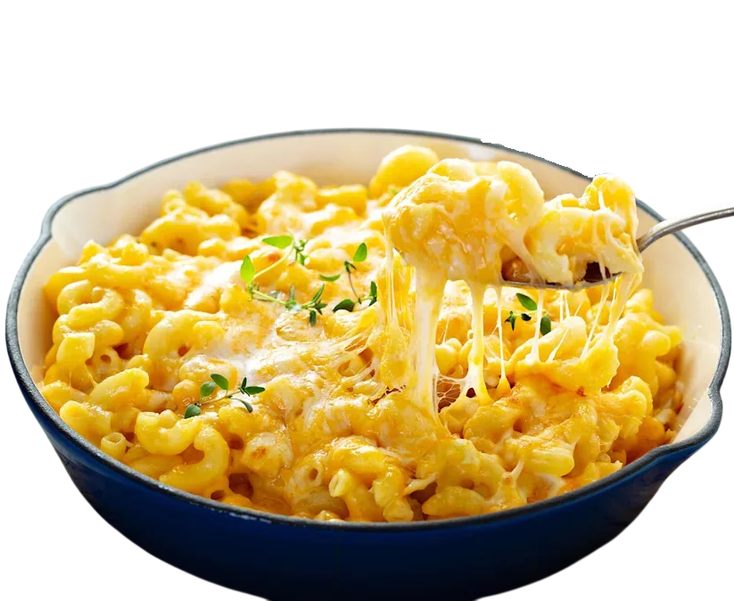
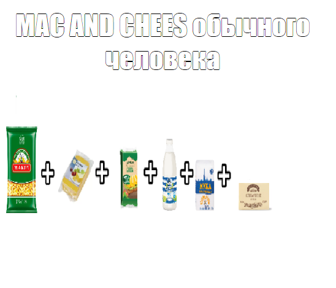
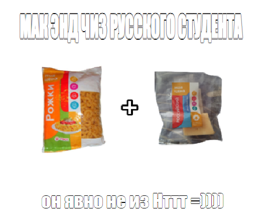

Состав
Mac & Cheese — это не просто макароны с сыром, а идеальный баланс нежной текстуры, тягучести и насыщенного сливочного вкуса.

Основа (Макароны)
Чаще всего используют «рожки». Важно варить до состояния al dente (чуть недоваренные), так как они «дойдут» уже в соусе при запекании.
Соус:
Сыр
Главный ингредиент. Обычно это смесь Чеддера (для вкуса) и Моцареллы или Гауды (для тягучести). Чем качественнее сыр, тем меньше комочков.
Основа
Смесь сливочного масла и муки, которую заливают молоком или сливками. Это делает соус густым и однородным.
Специи
Горчичный порошок
Скрытый ингредиент, который не дает вкуса горчицы, но подчеркивает остроту сыра.
Паприка
Добавляет теплый золотистый оттенок.
Мускатный орех
Совсем чуть-чуть, чтобы придать соусу классический
Черный перец и чесночный порошок
Для пикантности.
Разновидность
Классический
Просто макароны в соусе, перемешанные в кастрюле. Самый быстрый вариант.
Запеченный
Сверху посыпается панировочными сухарями (Панко) с маслом и запекается до хрустящей корочки.
С добавками
C беконом, карамелизированным луком или даже трюфельным маслом для гурманов.
Ну и самый крутой, сам пользуюсь)
макароны+сыр


Ребрышки-барбекю
— это сочное, нежное свиное мясо на кости, предварительно замаринованное и запеченное до румяной корочки в сладковато-пряном соусе. Мясо готовится медленно, приобретая аромат дымка, и легко отделяется от кости. Идеально для гриля или духовки, часто подается с овощами или картофелем.

Чтобы узнать больше о блюде НАЖМИ НА НЕГО ＼(°O°)／